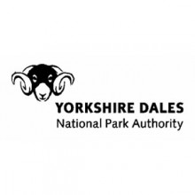

New guidance for people wanting to install renewable energy equipment in the Yorkshire Dales National Park has been put out for public consultation today.
Residents, businesses, groups and organisations considering plans for small-scale projects have until March 15 to have their say on the draft Guide to Development for Sustainable Energy Production in the Yorkshire Dales National Park.
The document, produced by the Yorkshire Dales National Park Authority (YDNPA), is intended to be a useful guide and reference document for people interested in sustainable energy production.
It outlines the Authority’s views on the use of various sustainable energy methods within the National Park and contains details of various options from solar panels to biomass boilers. It also signposts readers to reference documents, websites and support organisations who may be able to help further.
Peter Watson, the YDNPA’s Head of Planning, said: “We get a lot of inquiries each year about renewable energy production and about the Authority’s view of it so we hope this guidance will answer most, if not all, the questions potential developers may have.
“Obviously one of our main concerns is that a project will not harm the sensitive environment on the National Park and we hope the guide will be a useful resource that will help people decide if their idea is feasible and the best one for them and for this beautiful landscape.”
William Weston, the YDNPA’s Member Champion for Climate Change, said: “The guide is an excellent document – very comprehensive – and will be of real help to anyone wanting to generate power or reduce energy usage.
“It offers help and encouragement to people wanting to improve the sustainability of existing properties, to carry out new building development as sustainably as possible or to produce sustainable energy, both for profit (including through farm diversification) and to help reduce national reliance on fossil fuels.
“It will also focus on the range of energy-generating technologies available to help meet national targets to reduce carbon dioxide emissions and will put them within the context of the overall need to promote energy efficiency.”
The draft version of the guide can be viewed at www.yorkshiredales.org.uk/sustainableenergyproduction .
Anyone who would like to comment on it should write to Andrew McCullagh, Deputy Head of Planning, Yorkshire Dales National Park Authority, Yoredale, Bainbridge, Leyburn, North Yorkshire DL8 3EL, or contact him by phone on 0300 456 0030 or by email at andrew.mccullagh@yorkshiredales.org.uk .